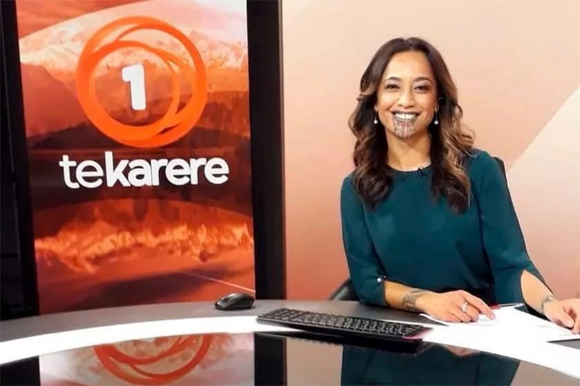
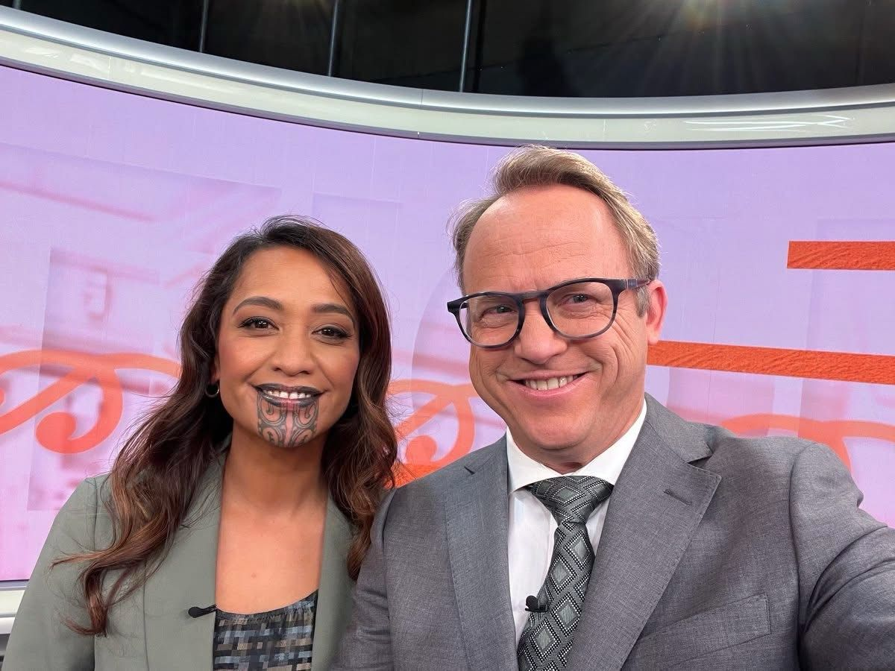
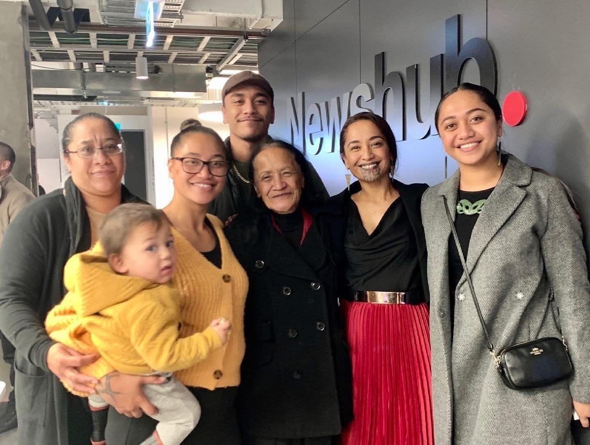

שדרנית הטלוויזיה המאורית עם קעקוע על הפנים,
פורסם במקור ב LinkedIn
שדרנית הטלוויזיה המאורית עם קעקוע על הפנים,
החלה לשדר חדשות בפריים טיים.
השדרנית המאורית Oriini Kaiipara מניו-זילנד, עשתה היסטוריה כראשונה עם קעקועי פנים מסורתיים, שמנחה תוכנית חדשות בפריים טיים בטלוויזיה הלאומית.
"ממש התמוגגתי. הייתי מעל הירח", אמרה Kaiipara ל-CNN, "זה כבוד עצום. אני לא יודעת איך להכיל את כל הרגשות".
קעקועים הם חלק מהמסורת של העם המאורי, אלה הילידים של מה שהיא כיום ניו זילנד. סימנים מקועקעים על הסנטר לנשים, מכונים moko kauae, בעוד שאצל הגברים הם מכסים את רוב הפנים ומוכרים כ-mataora. עבור הנשים המאוריות, המוקו מהווה טקס המסמן את המעבר מילדה לבגרות.
השדרנית Kaiipara סימנה עצמה ב"מוקו" שלה בינואר 2019, לדבריה מתוך החלטה להזכיר לעצמה את זהותה כאישה מאורית. "כשאני רואה את ההשתקפות שלי במראה, אני לא מסתכלת רק על עצמי", אמרה ל-CNN "אני מסתכלת על סבתא, אמא ועל הבנות שלי ואלה שלהן שיבואו אחריהן, כמו גם על כל הנשים האחרות, הבנות המאוריות שם בחוץ וזה מעצים אותי".
אמה של Kaiipara נפטרה ולא הספיקה לראות את בתה ברגע ההיסטורי הזה, אסון אשר העיב על שמחתה של השדרנית.
למרות כל התגובות החיוביות, היו גם תגובות שליליות להופעתה של Kaiipara, במיוחד מכיוון שהיא מרבה להשתמש בביטויים מאוריים כגון "E haere ake nei" (לבוא), "Ū tonu mai" (הישאר איתנו) ו"Taihoa e haere" (אל תלך עדיין). השפה המאורית חשובה לה מאוד ומטרתה לעודד אנשים לדבר בשפה ש"נוצרה מהדור של סבתא שלי" ולתבוע אותה מחדש עבור בני המאורים.
"עברנו הרבה טראומות וקולוניזציה בין-דורית ולנו, למאורים, כל זה מאוד מאוד רלוונטי ונוקב גם כן", אמרה Kaiipara "לא הרבה מבחינת יחסי הגזע השתנה כאן אצלנו במשך יותר מדי זמן". Kaiipara מקווה שנערות מאוריות צעירות יקבלו השראה מהסיפור שלה, כסימן לכך שהזמנים משתנים.
אחת התגובות השליליות שזכתה לחשיפה גדולה, הייתה כאשר צופה ממורמר בשם דיוויד, התלונן בדוא"ל ל-Newshub על הקעקוע ה"אגרסיבי ופוגעני" שעל פניה, שהוא "מראה רע לשדרנית טלוויזיה" והוסיף "היא גם מכניסה עצמה לתכנים המשודרים, עם השפה המאורית שאיננו מבינים אותה. עצרו את זה עכשיו".
השדרנית שיתפה את המכתב שלו בעמוד האינסטגרם שלה ובתגובה, הנדירה מצידה, תיארה את המתלונן כ"מתנה שממשיכה לתת לה". היא כתבה שהיא מצאה שקשה להתייחס ברצינות לתלונותיו "בהתחשב בכך שאין הפרה של תקני השידור". היא גם תיקנה אותו על האיות השגוי אצלו של Tā moko "אני מבינה שהתלונות שלך נובעות ממקום של העדפה שלך איך לדעתך צריך להיראות על המסך", כתבה ״אין שום איום במוקו ובאנשים הנושאים אותו ולכן לא מגיעה להם אפליה, הטרדה ודעות קדומות כאלה. אנא הימנע מלהמשיך ולהתלונן, רסן את הבורות והסטייה התרבותית שלך וכדאי לך להתעדכן, רצוי מעבר לשנות ה-1800".
גם לשרת החוץ של ניו זילנד, ננאיה מהוטה, יש קעקוע מוקו והיא החברה הפרלמנטרית הראשונה הנושאת אותו, בגאווה, בפרלמנט.
מקור: ורדית חרצית


